TEMP209
📑 Table of Contents
- Project Overview
- Design Philosophy
- Key Features
- MCU Compatibility
- Pin Mapping
- 7-Segment Display
- IR Remote Control (RC5)
- Serial Commands
- Configuration Menu
- Thermal Control Logic
- SoifGo Mobile Interface
- Fault & Safety
- Hardware
- Current Sensing with Hall Sensor
- 8-Hour Temperature Logger
- Timing Parameters
- Debugging
- Building & Programming
- Downloads & Links
- Test Videos
- Changelog
- About & License
1. Project Overview
TEMP209 is a compact, open-source digital temperature controller designed for the ATmega microcontroller family (ATmega8 / 88 / 328). It reads temperature from a DS18B20 sensor, displays it on a multiplexed 2-digit 7-segment display, and manages thermal and user-defined outputs.
The project is written in BASCOM-AVR and released for educational and open-source purposes. While its core nature is educational, TEMP209 is designed with the potential for industrial optimization and mass production.
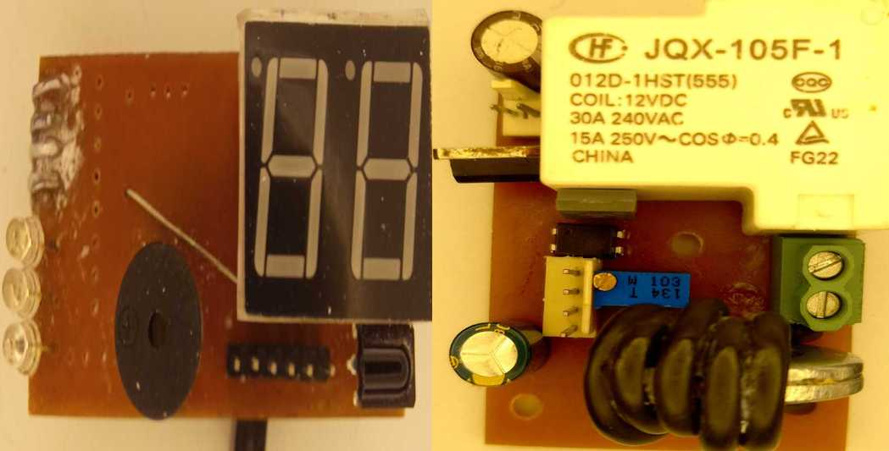
- Temperature Range: 0°C to 99°C
- Sensor: DS18B20 (1-Wire protocol)
- Display: Multiplexed 2-digit 7-segment
- Remote Control: RC5 infrared protocol
- Outputs:
Out1(reserved),Temp_out(thermal control) - Safety: Dedicated Fault input (PORTC.3) with adjustable delay
- Storage: EEPROM for settings and data logging
- MCU Support: ATmega8, ATmega88, ATmega328
2. Design Philosophy
The answer is that TEMP209 uses thermal control as a pretext to challenge other design logics.
❓ Why no physical buttons?
Implementing physical buttons cleanly has always been a significant challenge and often introduces complexity:
- Consumes a portion of the program for button management (matrix, analog input, etc.)
- Clean implementation and execution are difficult and costly
- Raises the overall cost of the device
✅ Why remote control?
- The user can apply settings without approaching the controller — comfortably from anywhere
- Example: adjusting AC temperature from the couch
- Removing physical buttons → cleaner, cheaper, more robust design
🎁 Educational Bonus
TEMP209 teaches you how to define any RC5 remote in your project — a valuable skill in itself.
3. Key Features
🌡️ Temperature Measurement
- DS18B20 sensor with 1-Wire protocol
- Range: 0°C to 99°C
- 1°C resolution
- Updated every 1 second
🖥️ Display
- Multiplexed 2-digit 7-segment display
- 10-level brightness control
- Special characters: P, b, d, F, H, L
🎛️ IR Remote Control
- RC5 protocol
- Full control without touching the device
- Supports multi-command remotes
- Any RC5 remote can be defined
🔌 Outputs
- Temp_out (PORTC.4): thermal control relay output
- Out1 (PORTC.5): user relay — reserved
- Buzzer (PORTC.0): alert buzzer
🌡️ Control Modes
- Heating (Heat): relay ON when temp < Setpoint
- Cooling (Cool): relay ON when temp > Setpoint + Delta
- Hysteresis (Delta): prevents relay chatter
- Protection Delay: protects compressor
🛡️ Safety & Fault
- Fault input (PORTC.3) — always active
- Adjustable fault reaction delay (0–9 seconds)
- Displays blinking "FF" on fault
- Sends
Faulton serial - Sensor disconnection detection
💾 Memory & Logging
- Settings stored in EEPROM
- Temperature logged every 1 minute
- Capacity: 480 samples (8 hours)
- Retrieve with
reportor IR command
📡 Serial Communication
- UART at 9600 baud
- Simple text commands
- Live debug output
- Mobile app integration (SoifGo)
🔋 Stability
- Built-in Watchdog (2048 ms)
- Auto-save setpoint
- Restores state after power loss
- Compatible with 3 MCU models
4. MCU Compatibility
| MCU | Flash | SRAM | EEPROM | Status |
|---|---|---|---|---|
| ATmega8 | 8 KB | 1 KB | 512 B | Primary target |
| ATmega88 | 8 KB | 1 KB | 512 B | Drop-in alternative |
| ATmega328 | 32 KB | 2 KB | 1 KB | Recommended |
- Update
$regfileto match your MCU - Remove
$progdirective and configure fuses manually - Disable
CKDIV8fuse for ATmega88/328
5. Pin Mapping
| Function | Pin | Description |
|---|---|---|
| Seg1 | PORTB.3 | Tens digit enable |
| Seg2 | PORTB.4 | Units digit enable |
| A | PORTB.1 | 7-segment A |
| B | PORTB.2 | 7-segment B |
| C | PORTD.7 | 7-segment C |
| D | PORTB.7 | 7-segment D |
| E | PORTD.5 | 7-segment E |
| F | PORTB.5 | 7-segment F |
| G | PORTB.6 | 7-segment G |
| Dp | PORTD.6 | Decimal point |
| Out1 | PORTC.5 | User relay — reserved |
| Temp_out | PORTC.4 | Thermal control relay |
| Buzzer | PORTC.0 | Buzzer |
| Fault | PORTC.3 | Fault input |
| RC5 IR | PINB.0 | IR receiver |
| 1-Wire | PORTD.4 | DS18B20 data |
| TX | PORTD.1 | Serial debug output (9600 baud) |
| RX | PORTD.0 | Serial command input (9600 baud) |
Out1 is a reserved, unused output. Wire it up and use it if needed.
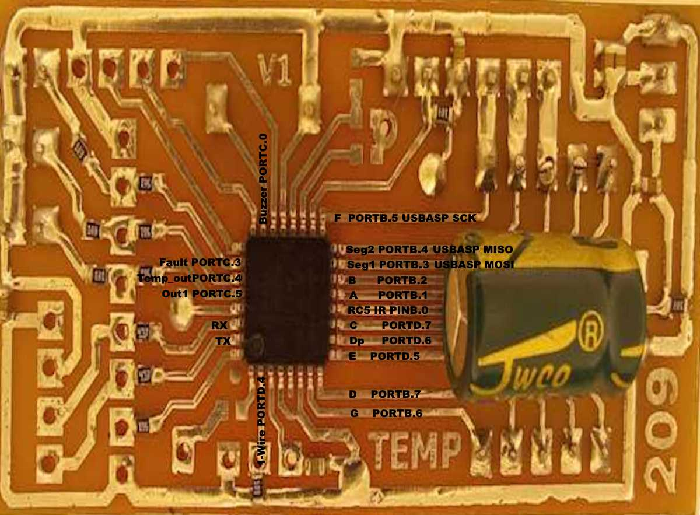
6. 7-Segment Display
Display Type
TEMP209 uses a 2-digit 7-segment display as listed in the BOM. But don't worry if you don't have this exact part — any type works:
- Common Cathode
- Common Anode
- Even with pin rearrangement
Why So Flexible?
Common Display Driving Methods
Displays are typically driven by:
- Multiplexers
- Interface ICs (e.g., 74HC595, MAX7219)
Why TEMP209 Connects Directly
Instead of using external driver ICs, TEMP209 connects the display directly to the MCU. This provides:
- 📏 Brevity — simpler circuit
- 💰 Lower cost
- 🎛️ More control
- 💡 Brightness adjustment (PWM-based)
- 🔀 Pin flexibility — works with different display types
- 🔋 Component savings
- 🎓 Educational value — most important of all
Pin Connections
| Segment | MCU Pin | Digit Select | MCU Pin |
|---|---|---|---|
| A | PORTB.1 | Seg1 (tens) | PORTB.3 |
| B | PORTB.2 | Seg2 (units) | PORTB.4 |
| C | PORTD.7 | Multiplexed switching | |
| D | PORTB.7 | ||
| E | PORTD.5 | ||
| F | PORTB.5 | ||
| G | PORTB.6 | ||
| Dp | PORTD.6 | ||
Character Map
| Value | Display | Meaning |
|---|---|---|
| 0–9 | 0–9 | Numeric digits |
| 10 | P | Protection Delay menu |
| 11 | b | Beep menu |
| 12 | d | Delta menu |
| 13 | F | Fault Delay menu |
| 14 | H | Heat/Cool menu |
| 15 | L | Light/Brightness menu |
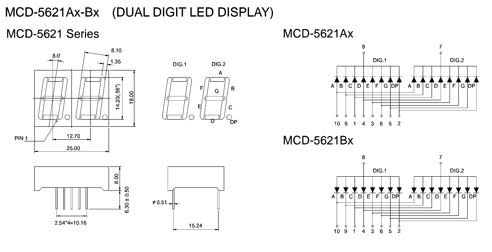
📄 Source: Showdigit()
Sub Showdigit(digit As Byte)
Select Case Digit
Case 0: A=0:B=0:C=0:D=0:E=0:F=0:G=1
Case 1: A=1:B=0:C=0:D=1:E=1:F=1:G=1
Case 2: A=0:B=0:C=1:D=0:E=0:F=1:G=0
Case 3: A=0:B=0:C=0:D=0:E=1:F=1:G=0
Case 4: A=1:B=0:C=0:D=1:E=1:F=0:G=0
Case 5: A=0:B=1:C=0:D=0:E=1:F=0:G=0
Case 6: A=0:B=1:C=0:D=0:E=0:F=0:G=0
Case 7: A=0:B=0:C=0:D=1:E=1:F=1:G=1
Case 8: A=0:B=0:C=0:D=0:E=0:F=0:G=0
Case 9: A=0:B=0:C=0:D=0:E=1:F=0:G=0
Case 10: A=0:B=0:C=1:D=1:E=0:F=0:G=0 ' P
Case 11: A=1:B=1:C=0:D=0:E=0:F=0:G=0 ' b
Case 12: A=1:B=0:C=0:D=0:E=0:F=1:G=0 ' d
Case 13: A=0:B=1:C=1:D=1:E=0:F=0:G=0 ' F
Case 14: A=1:B=0:C=0:D=1:E=0:F=0:G=0 ' H
Case 15: A=1:B=1:C=1:D=0:E=0:F=0:G=1 ' L
End Select
End Sub7. IR Remote Control (RC5)
TEMP209 uses the RC5 protocol with a 3-slot array structure.
Irtxt(1)= Remote Address — used for filtering (default: 3142)Irtxt(2)= Command 1 — primary commandIrtxt(3)= Command 2 — secondary command (optional)
Why Two Commands?
Some RC5 remotes (especially HVAC/AC controls) transmit multiple parameters in a single keypress (e.g., temperature and fan speed). The 3-slot array captures and processes all transmitted data.
Default Command Codes (from firmware)
| Address | Command 1 | Action |
|---|---|---|
| 3142 | 735 | Toggle Power |
| 3142 | 2759 | Toggle Out1 |
| 3142 | 3137 | Report Temperature Log |
| 3142 | 264 | Toggle Menu |
| 3142 | 22 | Setpoint +1°C |
| 3142 | 227 | Setpoint −1°C |
Menu navigation (when Menu = 1):
| Command 1 | Action |
|---|---|
| 2958 | Menu Up |
| 1738 | Menu Down |
| 1825 | Increment parameter |
| 285 | Decrement parameter |
Any RC5 Remote Works
Worried you can't find the example remote? Don't be. Most remotes are RC5, and any remote can be defined. Simply:
- Note the address and command in the Bluetooth terminal
- Replace the values in the code
- Compile and program
You likely have a few spare remotes lying around at home. In the market, especially cheap Bluetooth audio module remotes (like the one used in this project) cost almost nothing.
Pairing Procedure
Connect TX to serial terminal at 9600 baud and press a button. You'll see:
Address=3142
command1=735
command2=22Replace values in the Ir_down subroutine:
If Irtxt(1) = "your_address" Then
If Irtxt(2) = "your_command1" Then Call YourFunction()
If Irtxt(3) = "your_command2" Then Call YourSecondaryFunction()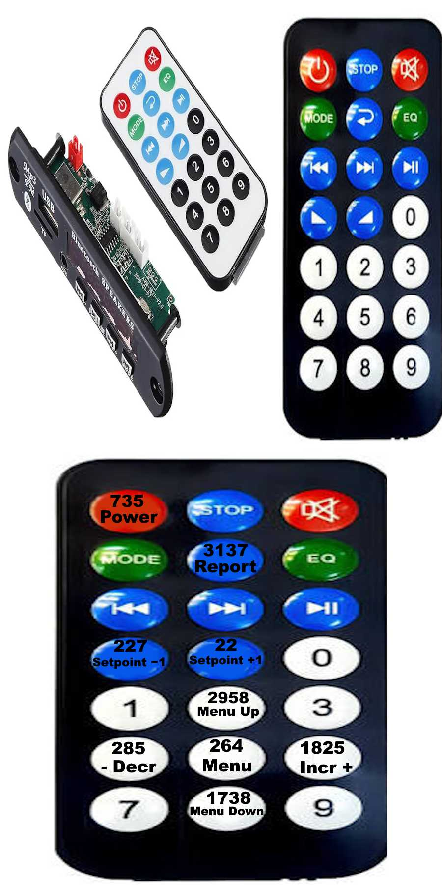
8. Serial Commands
9600 baud, 8N1.
| Command | Function |
|---|---|
set_temp+ | Increase setpoint by 1°C |
set_temp- | Decrease setpoint by 1°C |
power | Toggle power state |
report | Stream temperature log from EEPROM |
out1 | Toggle Out1 relay |
menu | Toggle menu mode |
up | Menu up |
down | Menu down |
incr | Increment menu parameter |
decr | Decrement menu parameter |
Temp209
temp=25
Address=3142
command1=735
command2=22
setpoint=26
Faultreport command):
The log starts with live=N — a reference index that points to the position of the newest sample — followed by raw temperature values (0–255), and ends with end.
live=240
25
26
253
24
27
25
...
end
The value 253 is a position marker (not the end of the log). There can be more than one 253 in the stream — the one closest to live is the valid marker. 255 means an empty/erased EEPROM cell and is shown like any other value.
9. Configuration Menu
Navigate using IR or serial commands. Parameters are stored in EEPROM.
🎮 Access & Navigation
| Action | IR / SoifGo | Serial |
|---|---|---|
| Enter menu | Center button / ◉ | menu |
| Up | ▲ | up |
| Down | ▼ | down |
| Increase value | ▶ | incr |
| Decrease value | ◀ | decr |
| Exit | ◉ again | — |
| Auto-exit | After 8 seconds | — |
⚙️ Parameters
What: Mandatory delay between turning the relay off and back on.
Why: Prevents shock from fast power cycling. Compressors in ACs and fridges (especially low-back-pressure types) may be under pressure and fail to start if switched rapidly — leading to motor stall and damage without protection.
Range: 0 = disabled · 1-9 = minutes
What: Adjusts brightness of the 2-digit display.
Why: Optimize power consumption, or increase brightness in well-lit environments for better visibility.
Range: 0 = lowest · 9 = highest
What: Temperature gap between relay ON and OFF.
Why: Sometimes you need to store a bit of heat or cold, or avoid constant switching from rapid temperature changes. Delta lets the controller run a bit warmer or cooler than the setpoint.
Example: Setpoint = 25, Delta = 2
- Heating: relay ON below 25, OFF above 27
- Cooling: relay ON above 27, OFF below 25
Range: 0-9°C
What: Delays the controller's reaction to a fault signal.
Why: Motors with high inrush current may briefly trigger the fault input on startup. This delay prevents false trips while still providing protection.
Range:
0= fastest reaction (immediate fault detection)1-9= delay in seconds before reacting to fault
0 gives the fastest reaction, 1-9 adds seconds of delay for motors with high startup current.
Visual indication: When a fault occurs, the display shows "FF" blinking (eyes-catching alert).
Range: 1 = Heating (behaves like a heater) · 0 = Cooling (fridge, AC, ventilation fan)
What: Buzzer volume for key feedback and sensor-failure alarm.
Range: 0 = off · 1-9 = increasing volume
📄 Source: Menu Display
Sub Menudisplay()
Menutimer = 1
Reset Watchdog
Select Case Menunumber
Case 0 ' Protection Delay (P)
Tens = 10
If Menu_adder = 1 And Protectdelay < 9 Then Incr Protectdelay
If Menu_adder = 2 And Protectdelay > 0 Then Decr Protectdelay
Units = Protectdelay
If Menu_adder <> 0 Then Writeeeprom Protectdelay , 3
Case 1 ' Light (L)
Tens = 15
If Menu_adder = 1 And Brightness < 9 Then Incr Brightness
If Menu_adder = 2 And Brightness > 0 Then Decr Brightness
Units = Brightness
If Menu_adder <> 0 Then Writeeeprom Brightness , 4
Case 2 ' Deltatemp (d)
Tens = 12
If Menu_adder = 1 And Deltatemp < 9 Then Incr Deltatemp
If Menu_adder = 2 And Deltatemp > 0 Then Decr Deltatemp
Units = Deltatemp
If Menu_adder <> 0 Then Writeeeprom Deltatemp , 5
Case 3 ' Fault Delay (F)
Tens = 13
If Menu_adder = 1 And Faultdelay < 9 Then Incr Faultdelay
If Menu_adder = 2 And Faultdelay > 0 Then Decr Faultdelay
Units = Faultdelay
If Menu_adder <> 0 Then Writeeeprom Faultdelay , 6
Case 4 ' Heatcoolmode (H)
Tens = 14
If Menu_adder = 1 Then Heatcoolmode = 1
If Menu_adder = 2 Then Heatcoolmode = 0
Units = Heatcoolmode
If Menu_adder <> 0 Then Writeeeprom Heatcoolmode , 7
Case 5 ' beep(b)
Tens = 11
If Menu_adder = 1 And Beep < 9 Then Incr Beep
If Menu_adder = 2 And Beep > 0 Then Decr Beep
Units = Beep
If Menu_adder <> 0 Then Writeeeprom Beep , 8
Call Beepvolume()
End Select
If Menu_adder > 0 Then Menu_adder = 0
End Sub10. Thermal Control Logic
The Heat_cool() subroutine manages automatic temperature regulation:
- Heating Mode (H=1):
Temp_out = 1whenCurrenttemp < Settemp - Cooling Mode (H=0):
Temp_out = 1whenCurrenttemp > Settemp + Deltatemp - Protection Delay (P): Enforces a delay between cycles to protect compressors
- Sensor Error Override: If
Sensorerr = 1, the relay is forced OFF for safety - Fault Override: If fault input is active (after the configured Fault Delay),
Temp_out = 0and display shows blinking "FF"
📄 Source: Heat/Cool Control
Sub Heat_cool()
Disable Interrupts
Tempthreshold = Settemp + Deltatemp
If Protectdelay = 0 Then Protect_delay_flag = 1
If Heatcoolmode = 1 Then
' Heating Mode
If Currenttemp < Settemp Then
If Protect_delay_flag = 1 And Faultstatus = 0 And Sensorerr = 0 Then Temp_out = 1
Blink_show = 1
Elseif Currenttemp > Tempthreshold Then
Temp_out = 0
Blink_show = 0
End If
End If
If Heatcoolmode = 0 Then
' Cooling Mode
If Currenttemp > Tempthreshold Then
If Protect_delay_flag = 1 And Faultstatus = 0 And Sensorerr = 0 Then Temp_out = 1
Blink_show = 1
Elseif Currenttemp < Settemp Then
Temp_out = 0
Blink_show = 0
End If
End If
If Temp_out = 1 Then
Temp_out_step = 0
Else
If Temp_out_step = 0 Then Temp_out_step = 1
End If
If Protectdelay > 0 And Temp_out_step = 1 Then
Protect_delay_tick = 1
Temp_out_step = 2
Protect_delay_flag = 0
End If
Enable Interrupts
Heatcoolstate = 0
End Sub11. SoifGo Mobile Interface
SoifGo is a mobile app that connects to TEMP209 via Bluetooth, giving you full control from your phone. The UI is customizable — you can modify or extend it as you wish.
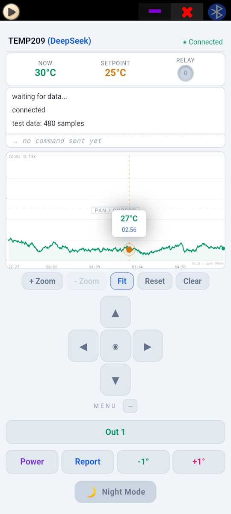
🔌 Bluetooth Connection
Pair your phone with the controller's Bluetooth module and connect.
📺 Live Display (Top)
- Live temperature — updated every second
- Setpoint — current target temperature
🖥️ Terminal Panel
The most educational feature! When connected, pressing any remote button shows its address and command in the terminal:
Address=3142
command1=735
command2=22Use this to discover codes for any remote, then replace them in your source, compile, and program.
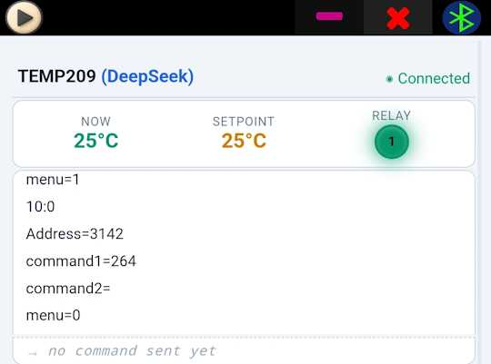
📊 Report Button & Temperature Graph
- Press the Report button
- The command is sent to the controller
- The controller streams the latest log
- Wait ~4 seconds
- The 8-hour temperature graph appears
Graph features:
- 🔍 Zoom in the upper half
- 📍 Pan by dragging
- 📏 Cursor bars show time and temperature (lower half)
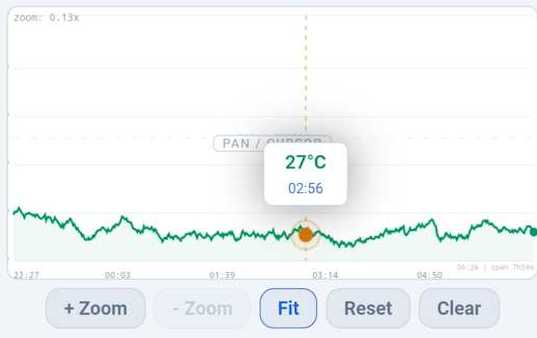
🎮 Bottom Buttons (Mimic Remote)
| Button | Function |
|---|---|
| Out1 | Toggle reserved output |
| Power | Toggle device power |
| +1 | Increase setpoint |
| -1 | Decrease setpoint |
| Report | Request temperature log |
◉ Center D-Pad (5 Buttons)
- ▲ Up
- ▼ Down
- ◀ Left (decrease)
- ▶ Right (increase)
- ◉ Center (enter / exit menu)
12. Fault & Safety
When the fault input on PORTC.3 receives a HIGH signal (2.7V–5V), and after the configured Fault Delay has passed:
- Immediately sets
Temp_out = 0 - Sets
Faultstatus = 1 - Displays blinking "FF" on the 7-segment display
- Sends
Faulton serial
Fault clears when the signal returns LOW or the device is reset.
Fault Delay (F Parameter)
The fault reaction delay is always active:
0= fastest possible reaction (immediate fault detection)1-9= delay in seconds before reacting to fault
This is useful for motors with high inrush current that may briefly trigger the fault input on startup, preventing false trips.
Hall Sensor Interface
The Fault input is typically driven by the Hall-sensor current comparator (see Section 14). Any over-current triggers a fault, cutting the relay for protection.
- Do NOT rely solely on the F (Fault) protection
- Always add a proper miniature circuit breaker (MCB) to the load side
- Add an inline glass fuse for the MCU power supply
- These are your primary protection; the Fault input is a secondary safety net
13. Hardware
Two-Board Design
TEMP209 is designed as two separate boards:
- Board 1: Motor / relay / power
- Board 2: Display / control / sensor
Mounting Options
- Integrated: Place both boards side by side in one enclosure
- Split: One near the motor, one in the room or control panel
🛡️ Safety Clearance
On the relay board, sufficient physical spacing is provided between the mains AC section and the low-voltage MCU power section. Be careful when handling the board, and always observe electrical safety practices.
- Load side: Miniature circuit breaker (MCB) matched to your load
- MCU supply: Inline glass fuse (e.g., 500 mA)
- Never operate without fuses
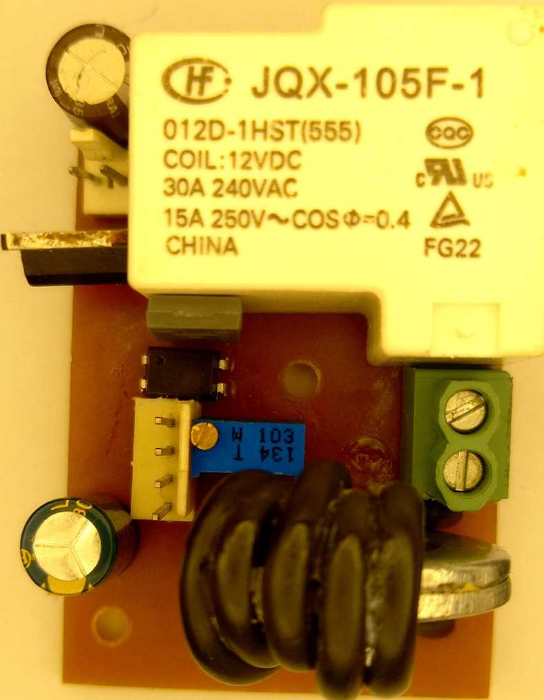
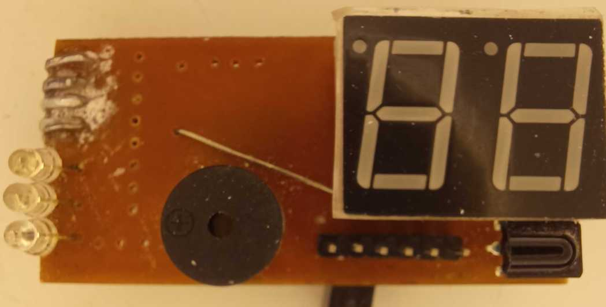
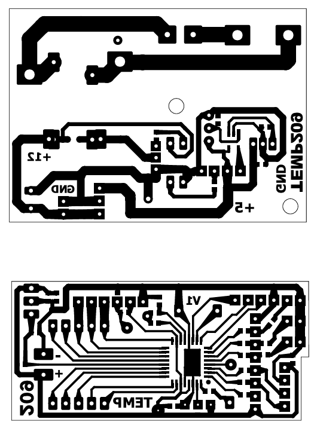
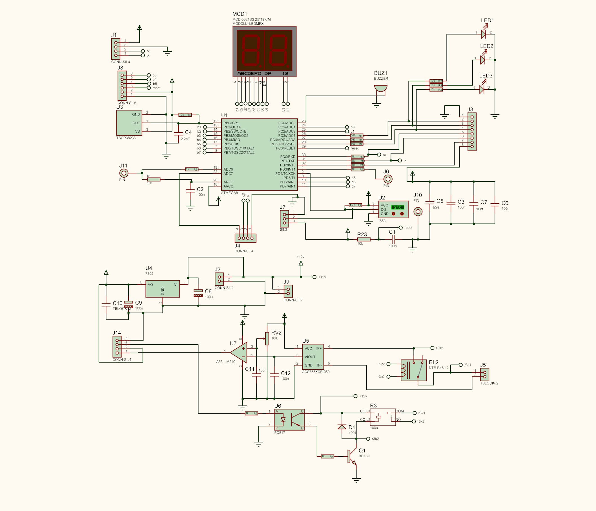
14. Current Sensing with Hall Sensor
The Challenge
Reading AC/DC current to detect over-current and trigger emergency shutdown.
Candidate Methods
| Method | Pros | Cons |
|---|---|---|
| Rectification + capacitor | Simple | Loses useful signal, complex circuit |
| ADC sampling | Accurate | Heavy MCU load, large code |
| Comparator op-amp ⭐ | Cheap, reliable, compact | Needs initial calibration |
🏆 Selected Method: Comparator Op-Amp
Hardware Setup
- Hall sensor sandwiched between two metal washers
- 5 turns of wire wound around it
- Hall output with 2.56V offset
How It Works
- AC current: Output oscillates sinusoidally at mains frequency
- DC current: Level shifts above/below the 2.56V offset (depending on direction)
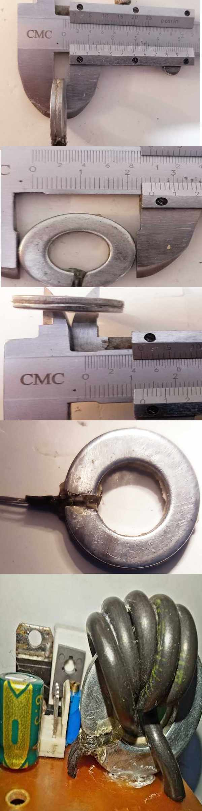
Calculations
- Each 1 A of current → 60 mV at the op-amp output
- 4 A → 4 × 60 mV = 240 mV + 2.56 V = 2.80 V
- 5 A → 5 × 60 mV = 300 mV + 2.56 V = 2.86 V
- Apply the expected maximum normal current (e.g., 4 A).
- At 4 A, the Hall output reaches 2.80 V; the op-amp begins oscillation and the MCU Fault input is triggered.
- The fault LED indicator should be OFF under normal current (e.g., 4 A) — turn the potentiometer until the LED turns off.
- When an over-current occurs (e.g., above 4 A), the fault LED turns ON, the 7-segment display shows blinking "FF", and the relay cuts off.
- The
Faultmessage is also announced on the serial output.
Depending on the op-amp and circuit, fine-tuning may be needed — but one-time calibration is enough.
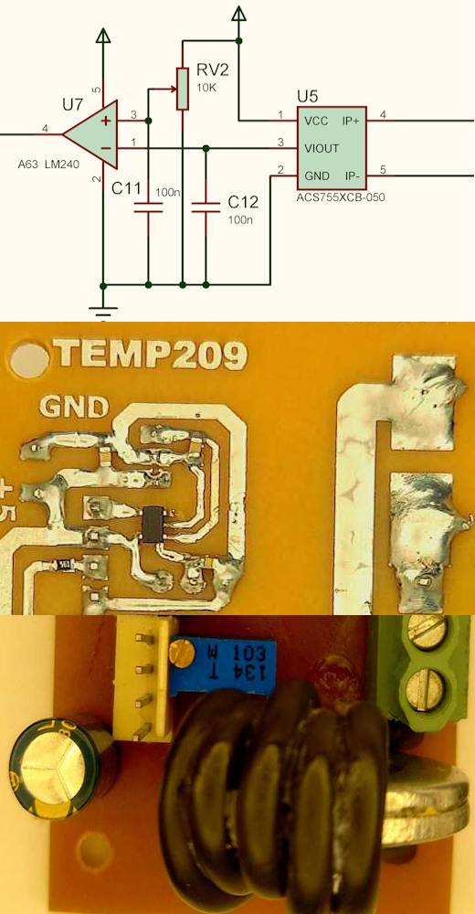
15. 8-Hour Temperature Logger
TEMP209 automatically logs one temperature sample every minute to EEPROM. The buffer works like a CCTV recorder — a 480-sample circular buffer that always holds the last 8 hours. The newest sample is always available, even after power loss.
How It Works
- Every 1 minute: a temperature sample is written to EEPROM
- Capacity: 480 samples = last 8 hours
- Circular buffer: when full, the oldest sample is overwritten
- Position marker: the value
253is written right after the newest sample and travels with it - Persistent: samples survive power loss
- Each minute, the current temperature is written to the next slot, and
253is written right after it. - The previous
253is overwritten by the new temperature sample — so the marker always sits right after the newest temperature. 253is a position marker (not the end of the log). It tells the reader where the newest sample is located in the circular buffer.255= empty / erased EEPROM cell (all bits = 1). It is displayed in the graph like any other value, so blank areas remain visible.
Viewing the Report
| Method | How |
|---|---|
| Serial command | Send report via Bluetooth or cable |
| IR remote | Press the button coded 3137 |
The full report is sent to the SoifGo app, where you can see the temperature graph on your phone. 📊
Report Format
The stream starts with live=N — the reference index of the newest sample — followed by raw temperature values (0–255), and ends with end.
live=240
25
26
253
24
27
25
...
end
253 is a position marker, not the end of the log. If more than one 253 appears in the stream, the reader uses live to pick the correct one (closest to live).
16. Timing Parameters
- Timer2: 8-bit, prescaler 8 → 1 µs per tick
- Overflow: 256 ticks = 256 µs
- 1 second: 3906 overflows
- 1 minute: 234,360 overflows
- Temperature print: every ~1 second (3906 overflows)
- Data logging: every 1 minute (234,360 overflows)
- Setpoint save: after 2000 ticks (~512 ms)
- Menu timeout: 8000 ticks (~2 s)
- IR wait timeout: 222 ticks (~56 ms)
17. Debugging
Monitor serial output at 9600 baud, 8N1:
Temp209 - Startup message
temp=25 - Current temperature
Address=3142 - Remote address
command1=735 - Primary command
command2=22 - Secondary command
setpoint=26 - Setpoint changed
Fault - Fault condition detected
live=240 - Report start (reference index of newest sample)
25 - Temperature sample
26 - Temperature sample
253 - Position marker
24 - Temperature sample
end - End of report streamCommon Issues
| Symptom | Possible Cause |
|---|---|
| Display shows "--" | Sensor disconnected or faulty |
| Display shows blinking "FF" | Fault input triggered (after Fault Delay) |
| No serial output | Wrong baud rate, TX not connected |
| IR not responding | Wrong remote codes — verify via terminal |
| Relay chatters | Delta too small — increase it |
| False fault trips on motor start | Increase Fault Delay (F parameter) to 1-9 seconds |
18. Building & Programming
🔌 On-Board Programmer Socket
The board includes a programmer socket for easy development and in-circuit programming. You can use any standard AVR programmer, such as USBasp.
🔧 Not Familiar with BASCOM?
Recommended Workflow
- Install BASCOM-AVR (or use an AI assistant to port)
- Open
temp209_m8.bas - Adjust remote codes if needed
- Compile
- Connect USBasp to the programmer socket
- Flash the MCU
- Verify via serial terminal at 9600 baud

19. Downloads & Links
📦 Full Release Package
🔗 External Links
20. Test Videos
Watch TEMP209 in action. These videos demonstrate real-world testing, menu navigation, remote control, and the fault protection system.
🎬 Video 1: Overview & Basic Operation
🎬 Video 2: Menu Navigation & Remote Control
🎬 Video 3: Fault Protection & Hall Sensor Test
temp209_test1.mp4, temp209_test2.mp4, temp209_test3.mp4) are placed in the same folder as this HTML file.
21. Changelog
v1.0 — Initial Release
- ATmega8 @ 8 MHz (compatible with ATmega88 / ATmega328)
- DS18B20 1-Wire temperature sensor
- Multiplexed 2-digit 7-segment display (direct drive)
- RC5 infrared remote control with learnable codes
- 7-parameter configuration menu
- EEPROM settings storage
- 8-hour circular temperature logger (480 samples)
- 480-sample circular buffer (CCTV-style) with position marker
- Marker (
253) sits right after the newest temperature sample - Report stream framed by
live=N(start) andend(terminator) - All values 0–255 streamed without filtering —
255= empty EEPROM cell - Fault input for over-current protection with adjustable reaction delay (always active;
0= fastest reaction,1-9= delay in seconds) - Sensor error detection — forces relay OFF for safety
- Serial commands for automation
- SoifGo mobile interface with live graph
- Two-board split hardware design
- On-board programmer socket
22. About & License
TEMP209 is an open-source educational project by Saeid Moghadam.
License
Open Source — Educational Purpose.
Contact
- Email: YOUR_EMAIL
- GitHub: github.com/USERNAME
Credits
- Design & firmware: Saeid Moghadam
- Mobile interface: SoifGo
- Developed with assistance from DeepSeek